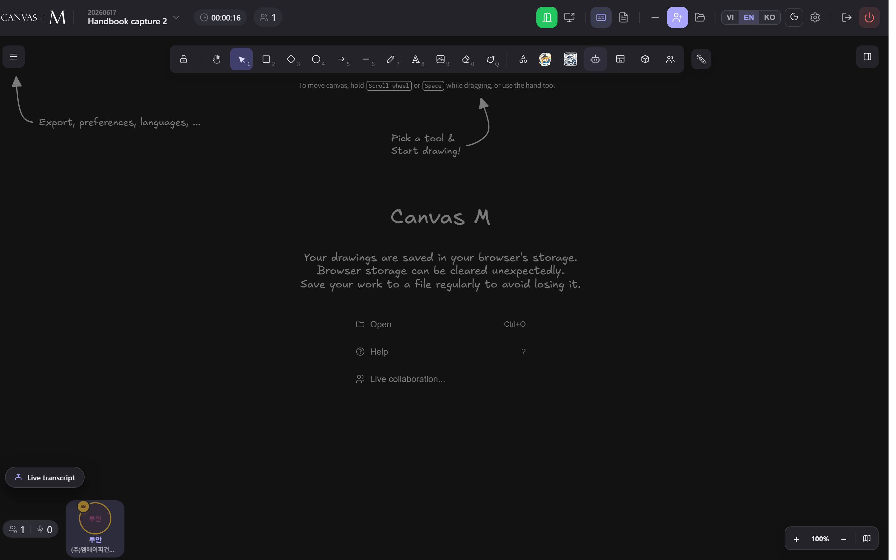

Translate & the Canvas Bot
Two pieces of on-canvas intelligence live side by side: a Translate pill that turns any text you select into Vietnamese, English or Korean, and the MCM Bot you drop anywhere on the board to summarise, list decisions, or answer a question about the meeting. Both write real canvas elements, so everyone in the room sees the result.
A translation is a real element, not a tooltip
Canvas M does not show you a private, hover-only translation. When you translate a text element, it creates a new child text element placed just below the original. Because it is a genuine canvas element, it rides the normal collaboration pipeline — every peer in the room sees the same translated line, with no extra setup.
The child stays linked to its source. Move or resize the original and the translation follows by the same offset, keeping the pair together. Delete the original and its translations are swept away with it. The translation is drawn in a muted grey so it reads as secondary text beneath the source.
Translate once, and the whole room reads it — the result is a shared canvas line, not a personal pop-up.
The three languages share one round-trip. Picking Tiếng Việt also warms the cache for English and 한국어, so your next language choice on the same text is instant.
Turn a note into another language
- Click a single text element on the canvas to select it. The pill appears only when exactly one item is selected.
- A small Translate pill floats just above the text's top-left corner. It carries a language icon and follows the text as you pan or zoom.
- Click Translate to translate into your current app language straight away — its tooltip reads Translate to {lang} for whichever language that is.
- To pick a different target, click the ▾ caret (tooltip Choose another language) and choose 🇻🇳 Tiếng Việt, 🇬🇧 English or 🇰🇷 한국어.
- The button shows Translating… while it works, then a grey translated line appears below your text.
→ The translated line sits under the source, visible to everyone in the room. Translate again into a second language and the new line stacks neatly below the first.
Pick the same language twice and Canvas M rewrites the existing line in place — it never piles up duplicate translations of the same pair.
Every face of the Translate pill
Default. The Translate label plus a ▾ caret. Clicking the label uses your app language; the caret opens the three-language menu.
While the request is in flight the label reads Translating… and every button is disabled so you can't fire a second call.
Shown after you edit the source. A refresh icon and the label Refresh translation replace the normal pill; the stale lines fade to signal they're out of date.
Watch the pill swap to Refresh translation whenever you change the source text after translating — that's your cue the lines below no longer match.
Translate controls and behaviours
| Control / behaviour | Exact text | What it does |
|---|---|---|
| Translate button | Translate | Translates into your current app language in one click. |
| Translate tooltip | Translate to {lang} | Names the target language the one-click button will use. |
| Language caret | Choose another language | Opens the menu: Tiếng Việt, English, 한국어. |
| In-progress label | Translating… | Shown on the button during the request; all buttons disabled. |
| Refresh button | Refresh translation | Re-translates every out-of-date line against the edited source. |
| Refresh tooltip | Translation is out of date — click to refresh | Explains why the pill changed to the refresh state. |
| Accessible name | Translate text | The pill's aria-label for screen readers. |
If the translation provider is unavailable, or returns the same text it was given, no line is added — the canvas is left untouched rather than cluttered with a duplicate.
There is no host-side switch for the on-canvas Translate pill — any participant who selects a text element can use it. (The separate chat translation toggle lives in the AI Tools panel; see the chat chapter.)
Drop the bot and ask a question
- In the toolbar, click the bot icon (tooltip Ask MCM Bot). The pointer enters placing mode and a small bot ghost follows your cursor.
- Click anywhere on the canvas to drop it. Click outside the canvas, or press Esc, to cancel placing.
- A small prompt box opens at the drop point, with the placeholder Type your request… (e.g. summarize the meeting, list decisions).
- Type any request — summarise, list decisions, translate this, and so on — then click Send or press Enter. Use Shift+Enter for a new line, Esc or × to cancel.
- A framed panel reading 🤖 Working… appears at the drop point, then is replaced in place by the bot's answer.
→ The answer lands as a dark, cyan-bordered 🤖 MCM BOT panel — a normal, movable canvas element everyone in the room can see and reposition.
Nothing fires automatically. The bot only runs on your explicit click, so there's no risk of two people triggering it at once — the prompt box is local to you; only the answer panel is shared.

Any participant can drop the bot — there is no host gate in the tool itself. Access is checked server-side by room membership, so only people actually in the meeting can run it.
- 1 Bot header — every answer panel opens with 🤖 MCM BOT in monospace so it's unmistakably the bot's, not a peer's note.
- 2 Answer body — light text on a dark panel, wrapped to the frame width. This is what the bot wrote in reply to your request.
- 3 Cyan frame — the panel is a real rectangle with bound text. Drag it, resize it, or delete it like any element; changes sync to the room.
- 4 Authored by MCM Bot — the panel is stamped with the bot's identity, so it's excluded from the meeting context the bot reads next time (it never quotes its own answers back to you).
When translate or the bot misbehaves
No Translate pill appears — Nothing selected, more than one element selected, or you selected a translation line rather than a source.
Click a single text element. Translating a translation is blocked on purpose, so the pill hides on those grey lines. → 9.2
Pill shows Refresh translation, not Translate — You edited the source text after translating, so the lines below it are now stale and faded.
Click Refresh translation to re-translate every out-of-date line in one pass. → 9.4
Clicking a language adds nothing — The source is empty/whitespace, or the provider is unavailable and returned the original text.
Make sure the note has real text. If the provider is down, Canvas M intentionally adds no line; try again later. → 9.5
Translation moved when I dragged the note — Expected. Translation lines are linked to their source and shift by the same offset to stay together.
Nothing to fix — move the source and the pair travels as one. Delete the source to remove its translations too. → 9.2
Bot panel says "The bot hit an error, try again." — The request to the bot failed or the server returned an error.
Press the bot icon again, drop a fresh prompt, and resend. The error text replaces the loading frame in place. → 9.6
Dropped the bot but no prompt box — You clicked outside the canvas area, which cancels placing.
Re-arm the bot from the toolbar and click inside the canvas to drop it. → 9.6
The bot reads the meeting's chat, voice transcript, canvas notes (with authors), participants and shelf files as context — but it skips its own previous answers, so it won't loop on "no info" replies.